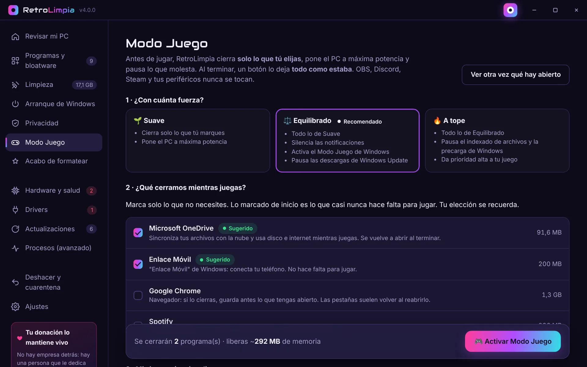
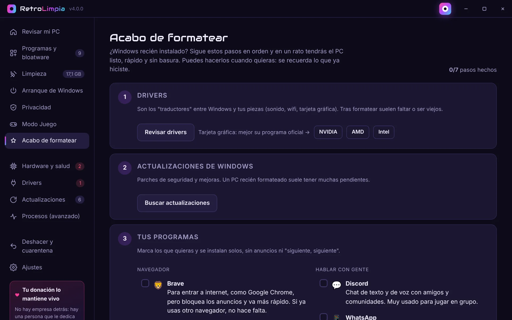
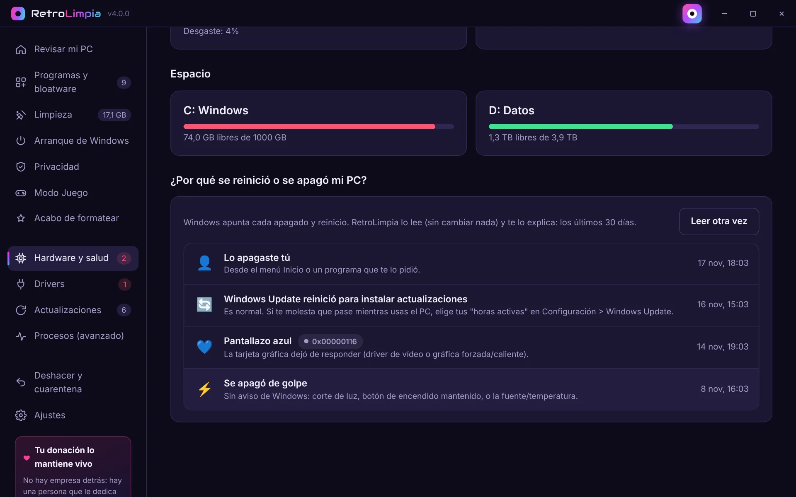
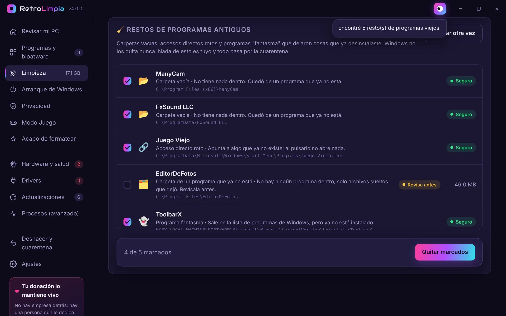
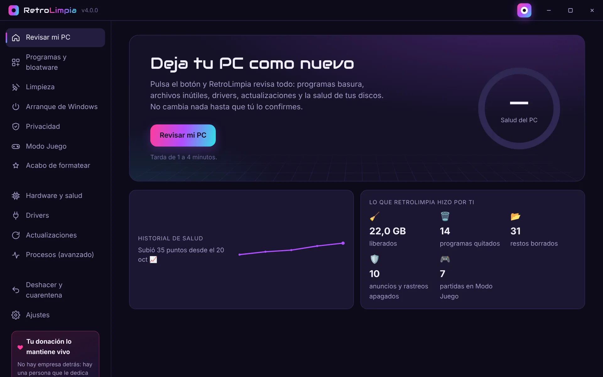

Deja tu PC como nuevo
Limpia la basura, quita los programas que sobran sin dejar restos, revisa drivers y hardware, apaga los anuncios de Windows y prepara el PC para jugar. Todo con un botón y explicado en palabras sencillas.
Windows 10 y 11 · Se instala como cualquier programa y después se actualiza solo · ¿Windows te avisa al instalar?
Todo lo que tu PC necesita, en un solo programa
Pensado para quien no sabe nada de informática: RetroLimpia te guía y nunca cambia nada sin preguntarte.
Revisar mi PC
Un botón lo analiza todo y le pone una nota de salud del 1 al 100. Después, "Arreglar todo" aplica lo recomendado.
Bloatware sin restos
Desinstala en silencio y borra las carpetas y entradas del registro que dejan los programas. Colores: verde seguro, amarillo opcional, rojo no tocar.
Limpieza profunda
Temporales, caché de Windows Update, navegadores y caché de juegos (shaders, Steam, Discord). Nunca toca tus fotos, documentos ni contraseñas.
Drivers y actualizaciones
Ve qué dispositivo falla, haz copia de tus drivers y actualiza Windows y tus programas de una vez. Solo de fuentes oficiales.
Privacidad
Apaga los anuncios del menú Inicio, las apps que se instalan solas y el envío de datos opcional. Cada interruptor explicado.
Todo se puede deshacer
Punto de restauración antes de cada cambio y cuarentena de 7 días: si algo deja de funcionar, lo devuelves con un clic.
Novedades de la versión 4.0
🎮 Modo Juego
Antes de jugar, cierra solo lo que tú elijas, pone el PC a máxima potencia y pausa lo que molesta. Al terminar, un botón lo deja todo como estaba.
- Tres intensidades: Suave, Equilibrado y A tope.
- OBS, Discord, Steam y tus periféricos nunca se tocan.
- Funciona con cualquier juego o emulador: añade su .exe y se activa solo al abrirlo.
- Si un programa te pregunta "¿guardar cambios?", no lo cierra a la fuerza.

✨ Acabo de formatear
¿Windows recién instalado? Pasos en orden para dejarlo listo en un rato.
- Drivers y actualizaciones de Windows.
- Tus programas de siempre instalados solos (VLC, 7-Zip, Steam, Discord, Brave...), cada uno explicado en una frase.
- Quitar lo que sobra, apagar anuncios y guardar ese momento por si algo falla.

💙 ¿Por qué se reinició mi PC?
Traduce lo que apunta Windows: cada pantallazo azul con su causa probable, los apagados de golpe y los reinicios de Windows Update de los últimos 30 días.

📂 Restos de programas antiguos
Encuentra carpetas vacías, accesos directos rotos y programas "fantasma" que dejaron cosas que desinstalaste hace tiempo, aunque no fuera con RetroLimpia. Todo pasa por la cuarentena.

🐢 Funciona hasta en PCs lentos
No gasta procesador mientras no lo usas y, si tu equipo tiene poca memoria, se aligera solo: sin animaciones y trabajando con menos prioridad para que el PC siga respondiendo.

RetroLimpia vs Microsoft PC Manager
PC Manager es una buena herramienta básica. RetroLimpia va más allá en lo que más se nota.
| RetroLimpia | PC Manager | |
|---|---|---|
| Limpieza de temporales | ✔ | ✔ |
| Programas que arrancan con Windows | ✔ | ✔ |
| Desinstalar en silencio y quitar los restos | ✔ | ✖ |
| Restos de programas desinstalados hace tiempo | ✔ | ✖ |
| Apagar anuncios y envío de datos de Windows | ✔ | ✖ |
| Drivers: problemas, copia de seguridad, fuentes oficiales | ✔ | ✖ |
| Actualizar todos tus programas de una vez | ✔ | ✖ |
| Salud y desgaste de los discos | ✔ | ✖ |
| Pantallazos azules explicados | ✔ | ✖ |
| Modo Juego con emuladores | ✔ | ✖ |
| Asistente tras formatear | ✔ | ✖ |
| Cuarentena de 7 días para deshacer | ✔ | ✖ |
| Código abierto | ✔ | ✖ |
Comparado con PC Manager en noviembre de 2026. Si Microsoft añade algo, avísanos en Discord y lo corregimos.
Preguntas frecuentes
¿Por qué Windows dice "Windows protegió su PC" al instalarlo?
Es normal y no significa que tenga un virus: RetroLimpia no tiene una firma digital de pago (cuesta cientos de dólares al año). Pulsa Más información → Ejecutar de todas formas. Puedes comprobar el archivo en VirusTotal y comparar su huella con el archivo SHA256.txt de cada versión. Te lo explicamos con detalle aquí.
¿Es gratis de verdad?
Sí, gratis para siempre, sin anuncios, sin versión "Pro" y sin enviar tus datos a ningún sitio. Es de código abierto (licencia MIT): cualquiera puede ver exactamente qué hace. Si te ayuda, puedes apoyarlo con una donación.
¿Puede romper algo de mi PC?
Está hecho para que no: nunca toca las carpetas de Windows ni tus documentos, los drivers y piezas del sistema están protegidos, crea un punto de restauración antes de cada cambio y todo lo que quita pasa 7 días en una cuarentena desde la que lo devuelves con un clic.
¿Funciona en un PC viejo o lento?
Sí. No gasta procesador mientras no lo usas y, en equipos con poca memoria o pocos núcleos, activa solo un modo ligero. Puedes forzarlo en Ajustes.
¿Se actualiza solo?
Sí. Descarga solo lo que cambió, se instala, se vuelve a abrir y te enseña las novedades.
Algo no funciona, ¿qué hago?
Dentro del programa tienes 🐞 Reportar un problema: envía el registro (sin tu nombre ni el del PC) y, si quieres, una captura. También puedes preguntar en el Discord de la comunidad.
¿Listo para dejar tu PC como nuevo?
Descárgalo, pulsa "Revisar mi PC" y deja que RetroLimpia haga el trabajo.